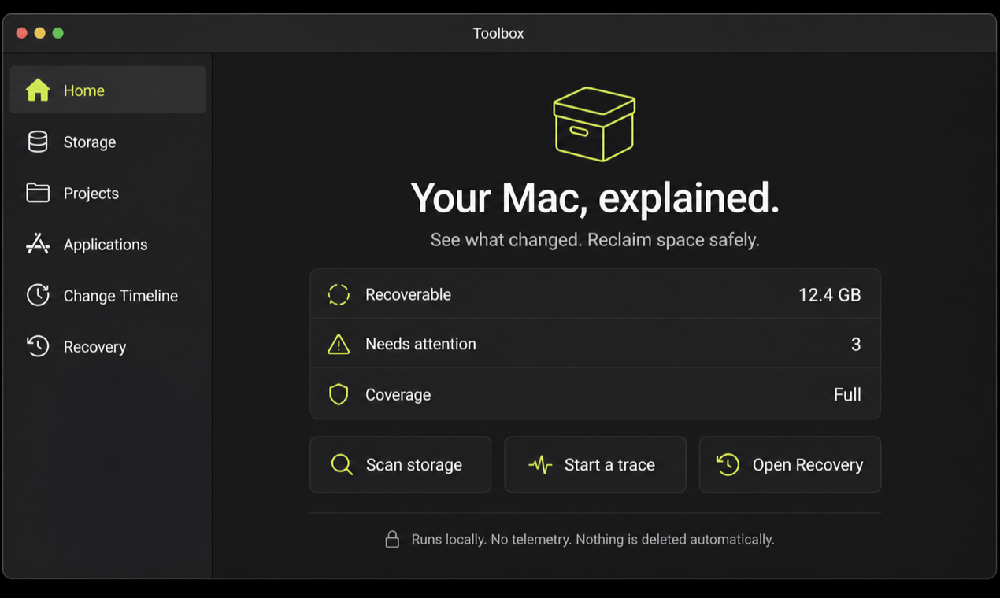
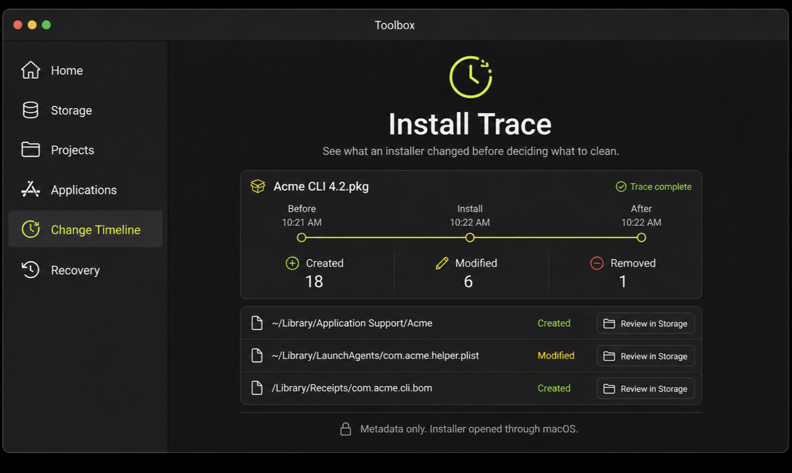
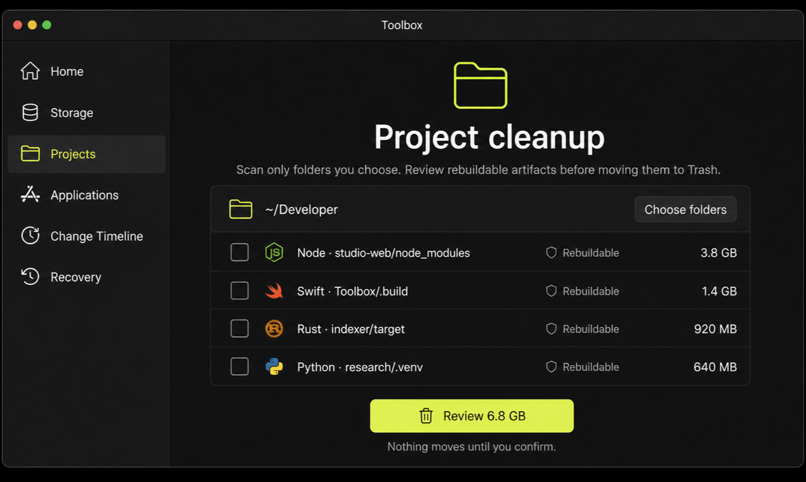
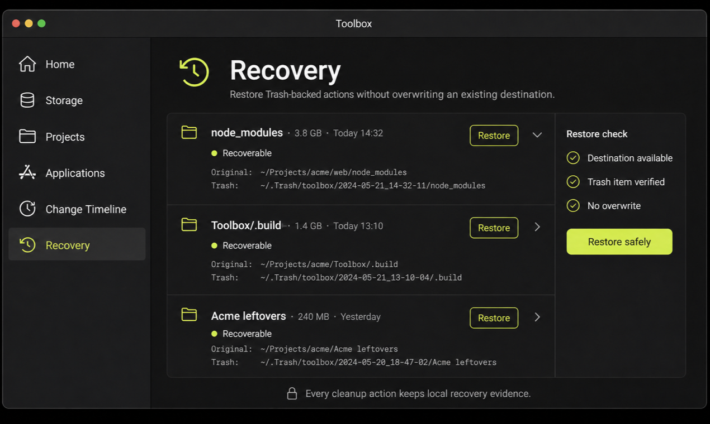

See what changed.
Reclaim space safely.
Trace installer changes, understand developer storage, and move only reviewed targets to Trash—with recovery evidence.
macOS 13+ · Apple Silicon + Intel · Unnotarized beta

Trace. Review. Recover.
- 1
Start a trace
Drop a DMG, PKG, or app and save a before snapshot.
- 2
Review evidence
See created, modified, and removed paths before cleanup.
- 3
Recover safely
Move reviewed targets to Trash and restore without overwrite.

Developer storage, explained.
Choose project roots, then review only recognized rebuildable output for Swift, Node, Python, Rust, Gradle, Flutter, and CocoaPods.
Toolbox never scans arbitrary roots or selects cleanup targets for you.

Recovery is part of cleanup.
Trash-backed actions retain original and Trash paths. Restore checks the destination again and refuses to overwrite an existing item.
Every mutation is revalidated at the moment you confirm it.

Local by design.
Paths, snapshots, and cleanup evidence stay on your Mac.
- No telemetry
- No account
- No privileged helper
- No automatic deletion
Install the public beta
Unnotarized beta. This build is ad-hoc signed, so macOS requires one manual approval. Do not disable Gatekeeper.
- Open the DMG and drag Toolbox to Applications.
- Try to open Toolbox once.
- Open System Settings → Privacy & Security → Open Anyway, then authenticate.